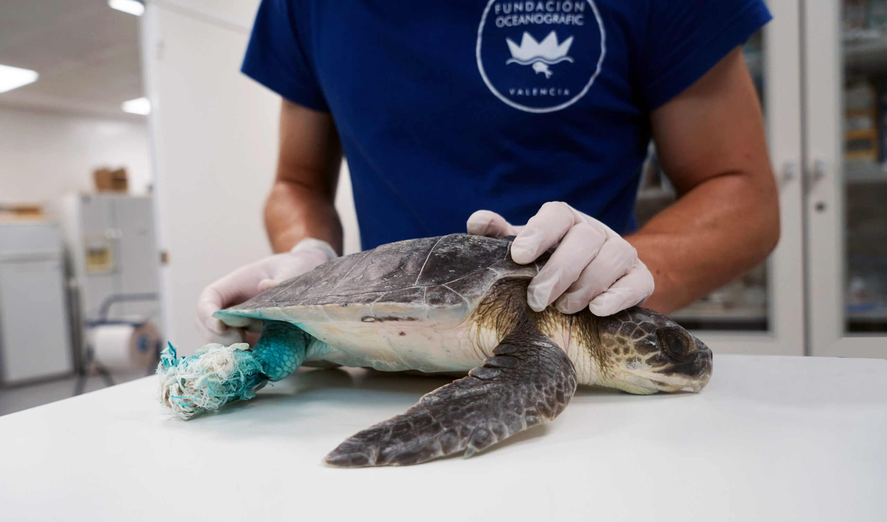

Aliados y comunidades
Creamos alianzas con empresas, organizaciones y grupos locales para sumar recursos y fortalecer los proyectos ambientales.
Qué hacemos
Articulamos patrocinios, colaboraciones logísticas y campañas conjuntas con aliados que desean apoyar la conservación costera y la educación ambiental.
Qué aporta el apoyo comunitario
El apoyo comunitario aporta recursos humanos, difusión y continuidad a las actividades, permitiendo escalar el impacto local.